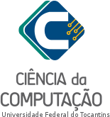
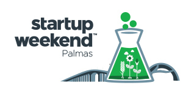
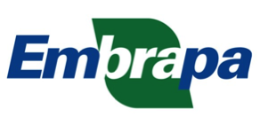
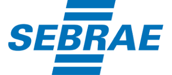

Realização



Apoio



O evento contará com palestras, minicursos e exposição de trabalhos por meio de pôsteres dentro da temática proposta. A trabalhos de pesquisa serão avaliados pelos professores do curso de maneira anônima por meio da plataforma Eventos UFT seguindo o modelo de artigos da Sociedade Brasileira de Computação (SBC) de 4-5 páginas. Para incentivar os envio de trabalhos, eles deveram seguir a classificação de áreas da Association for Computing Machinery (ACM):
Entretanto, o enfoque dos trabalhos deve ser obrigatoriamente voltado para a temática do evento e a forma de apresentação será exposição de pôsteres. O objetivo da apresentação em forma de pôsteres é fomentar a interação entre os participantes e a troca de conhecimento e experiências entre todos os envolvidos.
Logo, ao final do evento, espera-se que o material gerado com os artigos apresentados seja gerado um material de anais do evento. Espera-se que tornar o evento mais forte dentro do estado do Tocantins e gerar soluções empreendedoras para os problemas do estado com alto impacto sócio econômico.
As datas importantes do SECCOMP XI são:
Os Artigos deverão ser escritos de acordo conforme o template da Sociedade Brasileira de Computação, e submetidas, no formato PDF.
Devera ser feito um cadastro no site, após o cadastro, seguir as normas para a submissão do artigo presente no site.
Depois da submissão do artigo você receberá uma mensagem de confirmação do Comitê Avaliativo. Caso você não receba esta confirmação, por favor, contate o e-mail do comitê.
O cadastro para submissão dos trabalhos pode ser realizada aqui.
Faça o download do template da SBC aqui.